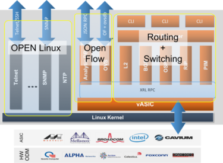

The Linux kernel originated in 1991, as a project of Linus Torvalds, while a university student in Finland. He posted information about his project on a newsgroup for computer students and programmers, and received support and assistance from volunteers who succeeded in creating a complete and functional kernel. Linux is Unix-like, but was developed without any Unix code, unlike BSD and its variants. Because of its open license model, the Linux kernel code is available for study and modification, which resulted in its use on a wide range of computing machinery from supercomputers to smart-watches. Although estimates suggest that Linux is used on only 1.82% of all "desktop" (or laptop) PCs, it has been widely adopted for use in servers and embedded systems such as cell phones. Linux has superseded Unix on many platforms and is used on most supercomputers including the top 385. Many of the same computers are also on Green500 (but in different order), and Linux runs on the top 10. Linux is also commonly used on other small energy-efficient computers, such as smartphones and smartwatches. The Linux kernel is used in some popular . Linux (/ˈlinʊks/ (About this soundlisten) LEEN-uuks or /ˈlɪnʊks/ LIN-uuks[9]) is a family of open-source Unix-like operating systems based on the Linux kernel, an operating system kernel first released on September 17, 1991, by Linus Torvalds. Linux is typically packaged in a Linux distribution. Distributions include the Linux kernel and supporting system software and libraries, many of which are provided by the GNU Project. Many Linux distributions use the word "Linux" in their name, but the Free Software Foundation uses the name "GNU/Linux" to emphasize the importance of GNU software, causing some controversy. Popular Linux distributions include Debian, Fedora, and Ubuntu. Commercial distributions include Red Hat Enterprise Linux and SUSE Linux Enterprise Server. Desktop Linux distributions include a windowing system such as X11 or Wayland, and a desktop environment such as GNOME or KDE Plasma. Distributions intended for servers may omit graphics altogether, or include a solution stack such as LAMP. Because Linux is freely redistributable, anyone may create a distribution for any purpose. Linux was originally developed for personal computers based on the Intel x86 architecture, but has since been ported to more platforms than any other operating system. Because of the dominance of the Linux-based Android on smartphones, Linux also has the largest installed base of all general-purpose operating systems. Although it is used by only around 2.3 percent of desktop computers, the Chromebook, which runs the Linux kernel-based Chrome OS, dominates the US K–12 education market and represents nearly 20 percent of sub-$300 notebook sales in the US. Linux is the leading operating system on servers (over 96.4% of the top 1 million web servers' operating systems are Linux), leads other big iron systems such as mainframe computers, and is the only OS used on TOP500 supercomputers (since November 2017, having gradually eliminated all competitors). Linux also runs on embedded systems, i.e. devices whose operating system is typically built into the firmware and is highly tailored to the system. This includes routers, automation controls, smart home technology (like Google Nest), televisions (Samsung and LG Smart TVs use Tizen and WebOS, respectively), automobiles (for example, Tesla, Audi, Mercedes-Benz, Hyundai, and Toyota all rely on Linux), digital video recorders, video game consoles, and smartwatches. The Falcon 9's and the Dragon 2's avionics use a customized version of Linux. Linux is one of the most prominent examples of free and open-source software collaboration. The source code may be used, modified and distributed commercially or non-commercially by anyone under the terms of its respective licenses, such as the GNU General Public License. 90% of all cloud infrastructure is powered by Linux including supercomputers and cloud providers.[39] 74% of smartphones in the world are Linux-based. In many ways, Linux is similar to other operating systems you may have used before, such as Windows, macOS (formerly OS X), or iOS. Like other operating systems, Linux has a graphical interface, and the same types of software you are accustomed to, such as word processors, photo editors, video editors, and so on. In many cases, a software’s creator may have made a Linux version of the same program you use on other systems. In short: if you can use a computer or other electronic device, you can use Linux. But Linux also is different from other operating systems in many important ways. First, and perhaps most importantly, Linux is open source software. The code used to create Linux is free and available to the public to view, edit, and—for users with the appropriate skills—to contribute to. Linux is also different in that, although the core pieces of the Linux operating system are generally common, there are many distributions of Linux, which include different software options. This means that Linux is incredibly customizable, because not just applications, such as word processors and web browsers, can be swapped out. Linux users also can choose core components, such as which system displays graphics, and other user-interface components.
Currently most operating systems support a variety of networking protocols, hardware, and applications for using them. This means that computers running dissimilar operating systems can participate in a common network for sharing resources such as computing, files, printers, and scanners using either wired or wireless connections. Networks can essentially allow a computer's operating system to access the resources of a remote computer to support the same functions as it could if those resources were connected directly to the local computer. This includes everything from simple communication, to using networked file systems or even sharing another computer's graphics or sound hardware. Some network services allow the resources of a computer to be accessed transparently, such as SSH which allows networked users direct access to a computer's command line interface. Client/server networking allows a program on a computer, called a client, to connect via a network to another computer, called a server. Servers offer (or host) various services to other network computers and users. These services are usually provided through ports or numbered access points beyond the server's IP address. Each port number is usually associated with a maximum of one running program, which is responsible for handling requests to that port. A daemon, being a user program, can in turn access the local hardware resources of that computer by passing requests to the operating system kernel. Many operating systems support one or more vendor-specific or open networking protocols as well, for example, SNA on IBM systems, DECnet on systems from Digital Equipment Corporation, and Microsoft-specific protocols (SMB) on Windows. Specific protocols for specific tasks may also be supported such as NFS for file access. Protocols like ESound, or esd can be easily extended over the network to provide sound from local applications, on a remote system's sound hardware.
A computer being secure depends on a number of technologies working properly. A modern operating system provides access to a number of resources, which are available to software running on the system, and to external devices like networks via the kernel.[38] The operating system must be capable of distinguishing between requests which should be allowed to be processed, and others which should not be processed. While some systems may simply distinguish between "privileged" and "non-privileged", systems commonly have a form of requester identity, such as a user name. To establish identity there may be a process of authentication. Often a username must be quoted, and each username may have a password. Other methods of authentication, such as magnetic cards or biometric data, might be used instead. In some cases, especially connections from the network, resources may be accessed with no authentication at all (such as reading files over a network share). Also covered by the concept of requester identity is authorization; the particular services and resources accessible by the requester once logged into a system are tied to either the requester's user account or to the variously configured groups of users to which the requester belongs. In addition to the allow or disallow model of security, a system with a high level of security also offers auditing options. These would allow tracking of requests for access to resources (such as, "who has been reading this file?"). Internal security, or security from an already running program is only possible if all possibly harmful requests must be carried out through interrupts to the operating system kernel. If programs can directly access hardware and resources, they cannot be secured. External security involves a request from outside the computer, such as a login at a connected console or some kind of network connection. External requests are often passed through device drivers to the operating system's kernel, where they can be passed onto applications, or carried out directly. Security of operating systems has long been a concern because of highly sensitive data held on computers, both of a commercial and military nature. The United States Government Department of Defense (DoD) created the Trusted Computer System Evaluation Criteria (TCSEC) which is a standard that sets basic requirements for assessing the effectiveness of security. This became of vital importance to operating system makers, because the TCSEC was used to evaluate, classify and select trusted operating systems being considered for the processing, storage and retrieval of sensitive or classified information. Network services include offerings such as file sharing, print services, email, web sites, and file transfer protocols (FTP), most of which can have compromised security. At the front line of security are hardware devices known as firewalls or intrusion detection/prevention systems. At the operating system level, there are a number of software firewalls available, as well as intrusion detection/prevention systems. Most modern operating systems include a software firewall, which is enabled by default. A software firewall can be configured to allow or deny network traffic to or from a service or application running on the operating system. Therefore, one can install and be running an insecure service, such as Telnet or FTP, and not have to be threatened by a security breach because the firewall would deny all traffic trying to connect to the service on that port. An alternative strategy, and the only sandbox strategy available in systems that do not meet the Popek and Goldberg virtualization requirements, is where the operating system is not running user programs as native code, but instead either emulates a processor or provides a host for a p-code based system such as Java. Internal security is especially relevant for multi-user systems; it allows each user of the system to have private files that the other users cannot tamper with or read. Internal security is also vital if auditing is to be of any use, since a program can potentially bypass the operating system, inclusive of bypassing auditing. For decades, the Linux group of operating systems has won the admiration of tech professionals for its simplicity and functionality. First developed in the early 1990s, it's a computer operating system like Windows. As software that controls a system's hardware resources, it's a popular choice for running web servers. Unlike Windows, Linux is open source software, which means it's freely available to everyone. A Kernel of Truth Linux is essentially a "kernel," which is a core component in an operating system that controls the CPU, memory, and peripherals on a computer. Often considered to have a "stripped down" user interface — without all the user-focused bells and whistles — it's designed purely to be functional and allow users a large degree of control over their hardware. Customizable and Flexible Traditional Linux fans believe it offers a much easier method of controlling hardware due to the existence of "the shell" — the Linux command line that allows users to control their computers by typing commands into a text interface. However, modern versions of Linux have much more sophisticated user interfaces, meaning traditional command line interaction doesn't have to be used. Customizing Linux is also possible by using different desktop environments. Although other operating systems tend to have bespoke desktops, there are many that can be adopted for use with Linux. Security From its very inception, security has been a cornerstone of the Linux operating system. Each user has to be walled off from others, and a password and user ID are required for an individual to use Linux. Users also have lower automatic access rights, which makes it harder for them to perpetuate the spread of malware by accessing a wide range of files on the computer. The open source format with many different operating environments, system architectures, and components — such as different email clients — also makes it more difficult for malware to sweep through it. Foolproof? Linux has multiple advantages when it comes to security, but no operating system is totally secure. One issue currently facing Linux is its growing popularity. For years, Linux was primarily used by a smaller, more tech-centric demographic. Now, its increasing use opens it up to the age-old problem of more users leading to an increased risk for malware infestations. Malware already exists that is designed especially for Linux. Erebus ransomware is one example, and the Tsunami backdoor has also caused problems for users over the last few years.